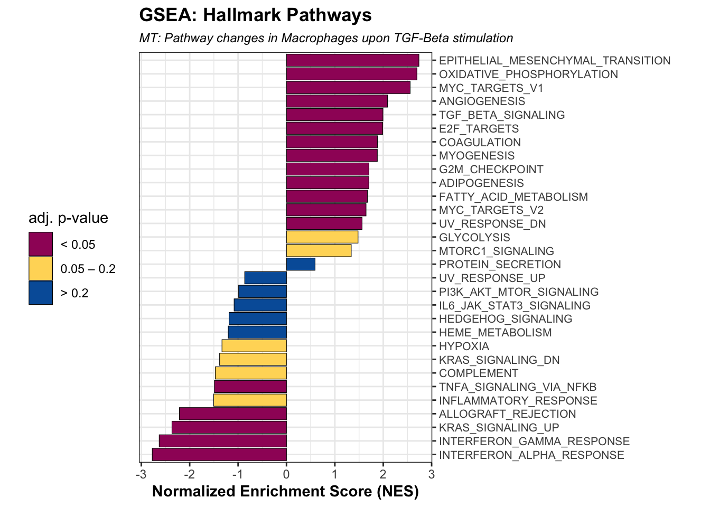
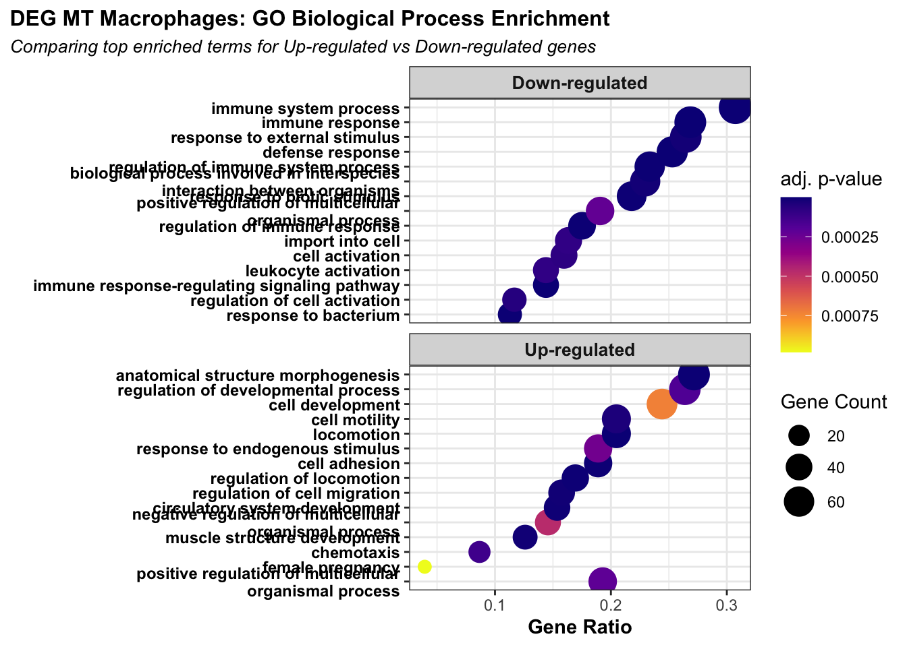

Last updated: 2026-06-26
Checks: 7 0
Knit directory: MT_Project/
This reproducible R Markdown analysis was created with workflowr (version 1.7.2). The Checks tab describes the reproducibility checks that were applied when the results were created. The Past versions tab lists the development history.
Great! Since the R Markdown file has been committed to the Git repository, you know the exact version of the code that produced these results.
Great job! The global environment was empty. Objects defined in the global environment can affect the analysis in your R Markdown file in unknown ways. For reproduciblity it’s best to always run the code in an empty environment.
The command set.seed(20260612) was run prior to running
the code in the R Markdown file. Setting a seed ensures that any results
that rely on randomness, e.g. subsampling or permutations, are
reproducible.
Great job! Recording the operating system, R version, and package versions is critical for reproducibility.
Nice! There were no cached chunks for this analysis, so you can be confident that you successfully produced the results during this run.
Great job! Using relative paths to the files within your workflowr project makes it easier to run your code on other machines.
Great! You are using Git for version control. Tracking code development and connecting the code version to the results is critical for reproducibility.
The results in this page were generated with repository version 02b6129. See the Past versions tab to see a history of the changes made to the R Markdown and HTML files.
Note that you need to be careful to ensure that all relevant files for
the analysis have been committed to Git prior to generating the results
(you can use wflow_publish or
wflow_git_commit). workflowr only checks the R Markdown
file, but you know if there are other scripts or data files that it
depends on. Below is the status of the Git repository when the results
were generated:
Ignored files:
Ignored: .DS_Store
Ignored: .Rproj.user/
Unstaged changes:
Modified: analysis/QC.Rmd
Note that any generated files, e.g. HTML, png, CSS, etc., are not included in this status report because it is ok for generated content to have uncommitted changes.
These are the previous versions of the repository in which changes were
made to the R Markdown (analysis/GSEA.Rmd) and HTML
(docs/GSEA.html) files. If you’ve configured a remote Git
repository (see ?wflow_git_remote), click on the hyperlinks
in the table below to view the files as they were in that past version.
| File | Version | Author | Date | Message |
|---|---|---|---|---|
| Rmd | 02b6129 | Sophie.Alice | 2026-06-26 | Adding more |
| html | 4ca3d0f | Sophie.Alice | 2026-06-26 | Build site. |
| Rmd | 0b82e50 | Sophie.Alice | 2026-06-26 | Adding more |
rm(list=ls())
gc() used (Mb) gc trigger (Mb) limit (Mb) max used (Mb)
Ncells 907546 48.5 1752115 93.6 NA 1321095 70.6
Vcells 1596782 12.2 8388608 64.0 16384 2392685 18.3library(readr)
library(dplyr)
library(ggplot2)
library(Seurat)
library(hdf5r)
library(scCustomize)
library(patchwork)
library(cowplot)
library(ggrepel)
library(workflowr)
library(scDblFinder)
library(clustree)
library(harmony)
library(speckle)
library(MAST)
library(tibble)
library(EnhancedVolcano)
library(ggarchery)
library(ggtangle)
library(clusterProfiler)
library(org.Hs.eg.db)
library(GO.db)
library(DOSE)
library(fgsea)
library(forcats)
library(SCpubr)
library(assertthat)Hallmark.pathways <- gmtPathways("/Users/sophiewagner/Desktop/USZ 25:26/Gabi_Project_Setup/Laila_MT_Project/Laila_MT_Project/Hallmark/h.all.v2026.1.Hs.symbols.gmt")# path <- "/shares/rheumatologie.usz/Sophie/Gabi_Projects/Laila_MT_Project/RDS_Files/Post_QC.rds"
path <- "/Users/sophiewagner/Desktop/USZ 25:26/Gabi_Project_Setup/Laila_MT_Project/Laila_MT_Project/DGEA_output/Macrophages_all.csv"
Macrophages_all <- read_csv(path)New names:
Rows: 5546 Columns: 7
── Column specification
──────────────────────────────────────────────────────── Delimiter: "," chr
(1): gene dbl (6): ...1, p_val, avg_log2FC, pct.1, pct.2, p_val_adj
ℹ Use `spec()` to retrieve the full column specification for this data. ℹ
Specify the column types or set `show_col_types = FALSE` to quiet this message.
• `` -> `...1`Macrophages_all# A tibble: 5,546 × 7
...1 gene p_val avg_log2FC pct.1 pct.2 p_val_adj
<dbl> <chr> <dbl> <dbl> <dbl> <dbl> <dbl>
1 1 SELENOP 1.23e-73 -2.40 0.382 0.729 4.76e-69
2 2 SLC9A9 2.31e-71 -1.63 0.792 0.895 8.93e-67
3 3 SKIL 5.27e-69 1.43 0.877 0.554 2.03e-64
4 4 CD163L1 7.02e-69 -3.05 0.396 0.736 2.71e-64
5 5 FGD5 1.76e-61 1.96 0.646 0.21 6.81e-57
6 6 IGF1 2.23e-61 -4.29 0.073 0.429 8.61e-57
7 7 AOAH 7.53e-59 -1.66 0.73 0.869 2.91e-54
8 8 ATP8B4 8.56e-59 -1.39 0.68 0.873 3.31e-54
9 9 F13A1 1.49e-58 -5.70 0.037 0.367 5.74e-54
10 10 ARHGAP26 1.85e-54 -0.894 0.96 0.989 7.12e-50
# ℹ 5,536 more rowscustom_palette <- colorRampPalette(c("#005EA8", "#6DB335", "#FFD966", "#EDAAD2", "#9F1C67"))
gradient_colors3 <- custom_palette(6)Macrophages.ranked <- Macrophages_all %>%
dplyr::select(gene, avg_log2FC) %>%
na.omit() %>%
distinct() %>%
group_by(gene) %>%
summarize(LFC = mean(avg_log2FC)) %>%
arrange(desc(LFC))
ranked <- deframe(Macrophages.ranked)
rank <- ranked[names(ranked) != ""]set.seed(42)
fgseares <- fgsea(pathways = Hallmark.pathways, stats = rank, nperm = 1000)
fgseares.tidy <- fgseares %>%
as_tibble() %>%
arrange(desc(NES))
fgseares.tidy <- fgseares.tidy %>%
dplyr::select(-ES, -nMoreExtreme)
fgseares.tidy.top.up <- head(fgseares.tidy, 15)
fgseares.tidy.top.down <- tail(fgseares.tidy, 15)
fgseares.tidy.top.both <- rbind(fgseares.tidy.top.up, fgseares.tidy.top.down)plot_df <- fgseares.tidy.top.both %>%
mutate(
padj_group = case_when(
padj <= 0.05 ~ "< 0.05",
padj <= 0.2 ~ "0.05 – 0.2",
TRUE ~ "> 0.2"
),
padj_group = factor(padj_group, levels = c("< 0.05", "0.05 – 0.2", "> 0.2")),
pathway = gsub("HALLMARK_", "", pathway),
)
ggplot(plot_df, aes(reorder(pathway, NES), NES)) +
geom_col(aes(fill = padj_group), color = "black", linewidth = 0.2) +
coord_flip() +
scale_x_discrete(position = "top", labels = scales::label_wrap(50)) +
scale_fill_manual(
name = "adj. p-value",
values = c(
"< 0.05" = "#9F1C67",
"0.05 – 0.2" = "#FFD966",
"> 0.2" = "#005EA8"
),
drop = FALSE
) +
labs(
x = "",
y = "Normalized Enrichment Score (NES)",
title = "GSEA: Hallmark Pathways",
subtitle = "MT: Pathway changes in Macrophages upon TGF-Beta stimulation"
) +
theme_bw() +
theme(
aspect.ratio = 1.4,
axis.text.y = element_text(size = 8, hjust = 0),
axis.title = element_text(face = "bold"),
plot.title = element_text(hjust = 0, face = "bold"),
plot.subtitle = element_text(hjust = 0, size = 9, face = "italic"),
legend.position = "left"
)
| Version | Author | Date |
|---|---|---|
| 4ca3d0f | Sophie.Alice | 2026-06-26 |
df <- Macrophages_all
# Upregulated Genes
up_genes <- df %>%
filter(avg_log2FC > 0.5, p_val_adj <= 0.05) %>%
distinct(gene) %>%
pull(gene) %>%
na.omit()
# Downregulated Genes
down_genes <- df %>%
filter(avg_log2FC < -0.5, p_val_adj <= 0.05) %>%
distinct(gene) %>%
pull(gene) %>%
na.omit()
# Background Universe Genes
universe <- df %>%
distinct(gene) %>%
pull(gene) %>%
na.omit()set.seed(42)
Humanlibrary <- org.Hs.eg.db
###################################### upregulated genes
up.GO <- enrichGO(
gene = up_genes,
universe = universe,
OrgDb = Humanlibrary,
keyType = "SYMBOL",
ont = "BP",
pAdjustMethod = "BH",
pvalueCutoff = 0.1,
minGSSize = 5,
maxGSSize = 800
)'select()' returned 1:1 mapping between keys and columns'select()' returned 1:many mapping between keys and columnssimp.up.GO <- clusterProfiler::simplify(up.GO)
head(simp.up.GO) ID Description GeneRatio BgRatio
GO:0040011 GO:0040011 locomotion 52/254 369/4904
GO:0009653 GO:0009653 anatomical structure morphogenesis 69/254 638/4904
GO:0007155 GO:0007155 cell adhesion 48/254 375/4904
GO:0040012 GO:0040012 regulation of locomotion 43/254 319/4904
GO:0072359 GO:0072359 circulatory system development 39/254 281/4904
GO:0061061 GO:0061061 muscle structure development 32/254 205/4904
RichFactor FoldEnrichment zScore pvalue p.adjust
GO:0040011 0.1409214 2.720782 8.032887 6.989526e-12 3.521323e-08
GO:0009653 0.1081505 2.088070 6.886179 4.301265e-10 1.083489e-06
GO:0007155 0.1280000 2.471307 6.928499 1.602510e-09 2.691148e-06
GO:0040012 0.1347962 2.602523 6.917532 2.660716e-09 3.351172e-06
GO:0072359 0.1387900 2.679631 6.776828 7.070196e-09 7.123929e-06
GO:0061061 0.1560976 3.013789 6.883503 1.052472e-08 8.837256e-06
qvalue
GO:0040011 3.521323e-08
GO:0009653 1.083489e-06
GO:0007155 2.691148e-06
GO:0040012 3.351172e-06
GO:0072359 7.123929e-06
GO:0061061 8.837256e-06
geneID
GO:0040011 VASH1/SMAD7/SORL1/SLIT3/COL1A1/ROBO1/SEMA3C/HMOX1/ALOX5/USP14/COL3A1/GRN/ANOS1/TIMP1/TGFBR1/CXCL12/ITGAV/APOE/FBN2/PPARG/KIF21A/S100A4/RALA/CD63/SMURF2/PFN1/TMSB10/CORO1C/MAP4K4/RAB11A/ITGB1/PDE4B/MMP14/CD81/CXCL8/TALAM1/SLC12A2/MTUS1/DNM1L/ITGA6/PPIA/RNF7/CXADR/ITGB3/MMP2/TMSB4X/ACTG1/FN1/S100A11/SPATA13/DPYSL3/MAGI2
GO:0009653 RPLP2/VASH1/SMAD7/SLIT3/SMAD6/COL1A1/IL1RN/ROBO1/SEMA3C/COL1A2/BICD1/ACTN1/HMOX1/ACTB/SKI/SOX4/RPL37A/SKIL/ALOX5/KIF26B/COL3A1/GRN/ANOS1/TGFBR1/CXCL12/ITGAV/APOE/FBN2/PPARG/KIF21A/RPL36/PBX3/RALA/ARHGAP32/IGF2/SDC2/CORO1C/MAP4K4/TGM2/CPM/RPL23/S100A6/ITGB1/MMP14/CD81/ZFPM2/CXCL8/FGD5/RPL27A/SLC12A2/ADAM12/LGR4/ACTC1/MTHFD1L/ALCAM/SPP1/RPL39/DNM1L/YWHAH/RPLP1/RPL5/ITGA6/ITGB3/ZFYVE27/MMP2/EPN2/CTNND2/ACTG1/FN1
GO:0007155 PARD3B/SMAD7/SMAD6/IL1RN/ROBO1/ACTN1/ACTB/SOX4/SMARCE1/CADM1/ALOX5/COL3A1/ANOS1/PSMA4/CXCL12/ITGAV/HSPD1/DLG2/CD63/IGF2/CEBPB/CORO1C/MAP4K4/TGM2/ITGB1/MMP14/CD81/IRAK1/CXCL8/S100A10/CD226/ADAM12/TNFRSF21/ALCAM/LMO7/SPP1/ANTXR1/ITGA6/PPIA/RNF7/CXADR/ITGB3/MMP2/CTNND2/ACTG1/FN1/S100A11/OLR1
GO:0040012 VASH1/SMAD7/SORL1/COL1A1/ROBO1/SEMA3C/HMOX1/USP14/COL3A1/GRN/TIMP1/TGFBR1/CXCL12/ITGAV/APOE/FBN2/PPARG/KIF21A/CD63/SMURF2/PFN1/TMSB10/CORO1C/MAP4K4/RAB11A/ITGB1/MMP14/CD81/CXCL8/TALAM1/MTUS1/DNM1L/ITGA6/RNF7/ITGB3/MMP2/TMSB4X/ACTG1/FN1/S100A11/SPATA13/DPYSL3/MAGI2
GO:0072359 TRAF3IP2/VASH1/KRAS/SMAD7/SLIT3/ALPK3/SMAD6/COL1A1/ROBO1/SEMA3C/COL1A2/HMOX1/SKI/SOX4/ALOX5/COL3A1/GRN/TGFBR1/CXCL12/ITGAV/PPARG/TGM2/ITGB1/MMP14/TCF7L2/ZFPM2/SLC8A1/CXCL8/DNAAF4/SLC12A2/ADAM12/ACTC1/PDLIM7/CXADR/ITGB3/MMP2/EPN2/ACTG1/FN1
GO:0061061 RPLP2/SMAD7/ALPK3/ACTN1/ACTB/SKI/SOX4/RPL37A/SMARCE1/SKIL/UQCC2/COL3A1/TGFBR1/MTPN/RPL36/IGF2/RPL23/ITGB1/LARGE1/MMP14/TCF7L2/CD81/ZFPM2/SLC8A1/RPL27A/ADAM12/ACTC1/RPL39/RPLP1/RPL5/PDLIM7/CXADR
Count
GO:0040011 52
GO:0009653 69
GO:0007155 48
GO:0040012 43
GO:0072359 39
GO:0061061 32###################################### downregulated genes
down.GO <- enrichGO(
gene = down_genes,
universe = universe,
OrgDb = Humanlibrary,
keyType = "SYMBOL",
ont = "BP",
pAdjustMethod = "BH",
pvalueCutoff = 0.1,
minGSSize = 5,
maxGSSize = 800
)'select()' returned 1:many mapping between keys and columns
'select()' returned 1:many mapping between keys and columnssimp.down.GO <- clusterProfiler::simplify(down.GO)
head(simp.down.GO) ID Description GeneRatio
GO:0006955 GO:0006955 immune response 69/257
GO:0006952 GO:0006952 defense response 65/257
GO:0002764 GO:0002764 immune response-regulating signaling pathway 37/257
GO:0002682 GO:0002682 regulation of immune system process 60/257
GO:0002376 GO:0002376 immune system process 79/257
GO:0009617 GO:0009617 response to bacterium 29/257
BgRatio RichFactor FoldEnrichment zScore pvalue
GO:0006955 564/4904 0.1223404 2.334465 7.921601 2.269319e-12
GO:0006952 548/4904 0.1186131 2.263342 7.378675 5.011432e-11
GO:0002764 221/4904 0.1674208 3.194676 7.850830 1.141260e-10
GO:0002682 517/4904 0.1160542 2.214512 6.865536 8.532305e-10
GO:0002376 787/4904 0.1003812 1.915445 6.590834 1.097632e-09
GO:0009617 156/4904 0.1858974 3.547241 7.603056 1.144342e-09
p.adjust qvalue
GO:0006955 1.143283e-08 1.143283e-08
GO:0006952 1.262380e-07 1.262380e-07
GO:0002764 1.437417e-07 1.437417e-07
GO:0002682 8.235990e-07 8.235990e-07
GO:0002376 8.235990e-07 8.235990e-07
GO:0009617 8.235990e-07 8.235990e-07
geneID
GO:0006955 PARP14/VSIR/TRIM25/IRAK3/LCP2/HLA-DRB1/ST3GAL1/MAP3K1/CLEC2D/LILRB5/MX2/PLD3/CR1/CD4/HLA-DMB/FCGR2C/PRDM1/TEC/TLR4/HLA-DPB1/ZBTB46/ITGAM/TNFRSF11A/CD48/ATP1B1/NAGK/RAB7B/IFI16/LY96/NAIP/INPP5D/NLRP1/MPEG1/IL6R/ADAMDEC1/VNN1/PLA2G4A/FCGR2A/TNFSF8/SAMSN1/TXK/THEMIS2/LY86/APPL2/SAMHD1/GPR183/CLEC4A/CMKLR1/FCN1/ITGA4/PIK3CD/HLA-DQA1/CXCL2/NLRP3/SLAMF7/TNFRSF1B/CASP1/IGSF6/COLEC12/CD86/PDE4D/PRKCB/MBP/MEF2C/SAMD9/IFI44/RNF125/TNFRSF14/PSTPIP1
GO:0006952 PARP14/TRIM25/IRAK3/IL10RA/HLA-DRB1/SLC9A9/STAB1/LILRB5/MX2/PLD3/CR1/CD4/FCGR2C/PRDM1/TLR4/LGALS8/ITGAM/TNFRSF11A/CD48/ATP1B1/NAGK/RAB7B/FOS/IFI16/LY96/NAIP/INPP5D/NLRP1/MPEG1/IL6R/PLA2G4C/VNN1/BNIP3L/SIGLEC1/LRRK2/FCGR2A/AOAH/TXK/THEMIS2/LY86/EMILIN2/NAMPT/APPL2/SAMHD1/CLEC4A/CMKLR1/FCN1/PIK3CD/CXCL2/NLRP3/SLAMF7/TNFRSF1B/CASP1/COLEC12/IGF1/CD163/MMP9/ATG7/MLKL/MEF2C/SAMD9/RNF125/TNFRSF14/METRNL/PSTPIP1
GO:0002764 TRIM25/IRAK3/LCP2/HLA-DRB1/MAP3K1/CLEC2D/LILRB5/PLD3/CR1/CD4/FCGR2C/TEC/TLR4/HLA-DPB1/ITGAM/NAGK/RAB7B/IFI16/LY96/NAIP/INPP5D/NLRP1/FCGR2A/TXK/THEMIS2/APPL2/CMKLR1/FCN1/PIK3CD/NLRP3/CASP1/CD86/PDE4D/PRKCB/MEF2C/RNF125/TNFRSF14
GO:0002682 PARP14/VSIR/ACVR2A/TRIM25/IRAK3/LCP2/HLA-DRB1/MAP3K1/CLEC2D/LILRB5/PLD3/MPP1/CR1/CD4/HLA-DMB/FCGR2C/PRDM1/GCNT1/TEC/TLR4/HLA-DPB1/ITGAM/TNFRSF11A/NAGK/RAB7B/IFI16/LY96/NAIP/INPP5D/NLRP1/IL6R/PRKCA/VNN1/PLA2G4A/LRRK2/FCGR2A/TNFSF8/SAMSN1/TXK/THEMIS2/APPL2/SAMHD1/GPR183/CMKLR1/FCN1/ITGA4/PIK3CD/HLA-DQA1/NLRP3/TNFRSF1B/CASP1/COLEC12/IGF1/CD86/PDE4D/PRKCB/PTPRE/MEF2C/RNF125/TNFRSF14
GO:0002376 RUBCN/PARP14/VSIR/ACVR2A/TRIM25/IRAK3/LCP2/HLA-DRB1/ST3GAL1/PDGFB/MAP3K1/CLEC2D/LILRB5/MX2/PLD3/MPP1/CR1/CD4/HLA-DMB/FCGR2C/PRDM1/GCNT1/TEC/TLR4/HLA-DPB1/ZBTB46/ITGAM/TNFRSF11A/CD48/ATP1B1/NAGK/RAB7B/IFI16/LY96/NAIP/INPP5D/NLRP1/MPEG1/IL6R/ADAMDEC1/PRKCA/VNN1/PLA2G4A/LRRK2/JAML/FCGR2A/TNFSF8/SAMSN1/TXK/THEMIS2/LY86/APPL2/SAMHD1/GPR183/CLEC4A/CMKLR1/FCN1/ITGA4/PIK3CD/HLA-DQA1/CXCL2/NLRP3/SLAMF7/TNFRSF1B/CASP1/IGSF6/COLEC12/IGF1/CD86/PDE4D/PRKCB/MBP/PTPRE/MEF2C/SAMD9/IFI44/RNF125/TNFRSF14/PSTPIP1
GO:0009617 IRAK3/IL10RA/HLA-DRB1/SLC9A9/STAB1/TLR4/ITGAM/TNFRSF11A/NAGK/FOS/LY96/NAIP/NLRP1/MPEG1/IL6R/PRKCA/LY86/EMILIN2/CXCL2/NLRP3/SASH1/TNFRSF1B/CASP1/COLEC12/CD86/MMP9/SCARB1/MEF2C/TNFRSF14
Count
GO:0006955 69
GO:0006952 65
GO:0002764 37
GO:0002682 60
GO:0002376 79
GO:0009617 29go_up_df <- as.data.frame(simp.up.GO) %>% mutate(Direction = "Up-regulated")
go_down_df <- as.data.frame(simp.down.GO) %>% mutate(Direction = "Down-regulated")
go_combined <- rbind(go_up_df, go_down_df) %>%
group_by(Direction) %>%
slice_head(n = 15) %>% # Adjust 'n' to show more or fewer terms per panel
ungroup()
go_plot_data <- go_combined %>%
mutate(
GeneRatio_num = sapply(GeneRatio, function(x) {
num_den <- as.numeric(strsplit(x, "/")[[1]])
return(num_den[1] / num_den[2])})) %>%
arrange(Direction, GeneRatio_num) %>%
mutate(Description = factor(Description, levels = unique(Description)))
ggplot(go_plot_data, aes(x = GeneRatio_num, y = Description)) +
geom_point(aes(color = p.adjust, size = Count)) +
facet_wrap(~Direction, scales = "free_y", ncol = 1) +
scale_color_viridis_c(
option = "plasma",
name = "adj. p-value",
guide = guide_colorbar(reverse = TRUE)
) +
scale_size_continuous(range = c(3, 8), name = "Gene Count") +
scale_y_discrete(labels = scales::label_wrap(45)) +
theme_bw() +
labs(
title = "DEG MT Macrophages: GO Biological Process Enrichment",
subtitle = "Comparing top enriched terms for Up-regulated vs Down-regulated genes",
x = "Gene Ratio",
y = ""
) +
theme(
plot.title.position = "plot",
plot.title = element_text(face = "bold", size = 12, hjust = 0),
plot.subtitle = element_text(size = 10, face = "italic", hjust = 0),
axis.text.y = element_text(size = 9, color = "black", face = "bold"),
axis.title.x = element_text(face = "bold"),
strip.text = element_text(face = "bold", size = 10), # Customizes facet header boxes
legend.position = "right"
)
| Version | Author | Date |
|---|---|---|
| 4ca3d0f | Sophie.Alice | 2026-06-26 |
sessionInfo()R version 4.6.0 (2026-04-24)
Platform: aarch64-apple-darwin23
Running under: macOS Sequoia 15.7.7
Matrix products: default
BLAS: /Library/Frameworks/R.framework/Versions/4.6/Resources/lib/libRblas.0.dylib
LAPACK: /Library/Frameworks/R.framework/Versions/4.6/Resources/lib/libRlapack.dylib; LAPACK version 3.12.1
locale:
[1] en_US.UTF-8/en_US.UTF-8/en_US.UTF-8/C/en_US.UTF-8/en_US.UTF-8
time zone: Europe/Zurich
tzcode source: internal
attached base packages:
[1] stats4 stats graphics grDevices utils datasets methods
[8] base
other attached packages:
[1] assertthat_0.2.1 SCpubr_3.0.1
[3] forcats_1.0.1 fgsea_1.38.0
[5] DOSE_4.6.0 GO.db_3.23.1
[7] org.Hs.eg.db_3.23.1 AnnotationDbi_1.74.0
[9] clusterProfiler_4.20.0 ggtangle_0.1.2
[11] ggarchery_0.4.4 EnhancedVolcano_1.30.0
[13] tibble_3.3.1 MAST_1.38.0
[15] speckle_1.12.0 harmony_2.0.5
[17] Rcpp_1.1.1-1.1 clustree_0.5.1
[19] ggraph_2.2.2 scDblFinder_1.26.2
[21] SingleCellExperiment_1.34.0 SummarizedExperiment_1.42.0
[23] Biobase_2.72.0 GenomicRanges_1.64.0
[25] Seqinfo_1.2.0 IRanges_2.46.0
[27] S4Vectors_0.50.1 BiocGenerics_0.58.1
[29] generics_0.1.4 MatrixGenerics_1.24.0
[31] matrixStats_1.5.0 ggrepel_0.9.8
[33] cowplot_1.2.0 patchwork_1.3.2
[35] scCustomize_3.3.0 hdf5r_1.3.12
[37] Seurat_5.5.0 SeuratObject_5.4.0
[39] sp_2.2-1 ggplot2_4.0.3
[41] dplyr_1.2.1 readr_2.2.0
[43] workflowr_1.7.2
loaded via a namespace (and not attached):
[1] vroom_1.7.1 goftest_1.2-3 Biostrings_2.80.1
[4] vctrs_0.7.3 spatstat.random_3.5-0 digest_0.6.39
[7] png_0.1-9 shape_1.4.6.1 git2r_0.36.2
[10] deldir_2.0-4 parallelly_1.47.0 fontLiberation_0.1.0
[13] MASS_7.3-65 reshape2_1.4.5 qvalue_2.44.0
[16] httpuv_1.6.17 withr_3.0.3 ggrastr_1.0.2
[19] xfun_0.59 ggfun_0.2.0 survival_3.8-6
[22] memoise_2.0.1 ggbeeswarm_0.7.3 gson_0.1.0
[25] janitor_2.2.1 systemfonts_1.3.2 tidytree_0.4.7
[28] zoo_1.8-15 GlobalOptions_0.1.4 pbapply_1.7-4
[31] rematch2_2.1.2 KEGGREST_1.52.2 promises_1.5.0
[34] otel_0.2.0 httr_1.4.8 restfulr_0.0.17
[37] globals_0.19.1 fitdistrplus_1.2-6 rstudioapi_0.19.0
[40] UCSC.utils_1.7.1 miniUI_0.1.2 processx_3.9.0
[43] curl_7.1.0 ScaledMatrix_1.20.0 polyclip_1.10-7
[46] SparseArray_1.12.2 xtable_1.8-8 stringr_1.6.0
[49] evaluate_1.0.5 S4Arrays_1.12.0 hms_1.1.4
[52] irlba_2.3.7 colorspace_2.1-2 ROCR_1.0-12
[55] reticulate_1.46.0 spatstat.data_3.1-9 magrittr_2.0.5
[58] lmtest_0.9-40 snakecase_0.11.1 later_1.4.8
[61] viridis_0.6.5 ggtree_4.2.0 lattice_0.22-9
[64] spatstat.geom_3.8-1 future.apply_1.20.2 getPass_0.2-4
[67] scattermore_1.2 XML_3.99-0.23 scuttle_1.22.0
[70] RcppAnnoy_0.0.23 pillar_1.11.1 nlme_3.1-169
[73] compiler_4.6.0 beachmat_2.28.0 RSpectra_0.16-2
[76] stringi_1.8.7 tensor_1.5.1 lubridate_1.9.5
[79] GenomicAlignments_1.48.0 plyr_1.8.9 crayon_1.5.3
[82] abind_1.4-8 BiocIO_1.22.0 scater_1.40.1
[85] gridGraphics_0.5-1 locfit_1.5-9.12 graphlayouts_1.2.4
[88] bit_4.6.0 fastmatch_1.1-8 whisker_0.4.1
[91] codetools_0.2-20 BiocSingular_1.28.0 bslib_0.11.0
[94] paletteer_1.7.0 plotly_4.12.0 mime_0.13
[97] splines_4.6.0 circlize_0.4.18 fastDummies_1.7.6
[100] tidydr_0.0.6 utf8_1.2.6 knitr_1.51
[103] blob_1.3.0 fs_2.1.0 listenv_1.0.0
[106] ggplotify_0.1.3 Matrix_1.7-5 callr_3.8.0
[109] statmod_1.5.2 tzdb_0.5.0 tweenr_2.0.3
[112] pkgconfig_2.0.3 tools_4.6.0 cachem_1.1.0
[115] cigarillo_1.2.0 RSQLite_3.53.2 viridisLite_0.4.3
[118] DBI_1.3.0 fastmap_1.2.0 rmarkdown_2.31
[121] scales_1.4.0 grid_4.6.0 ica_1.0-3
[124] Rsamtools_2.28.0 sass_0.4.10 ggprism_1.0.7
[127] dotCall64_1.2 RANN_2.6.2 farver_2.1.2
[130] scatterpie_0.2.6 tidygraph_1.3.1 yaml_2.3.12
[133] rtracklayer_1.72.0 cli_3.6.6 purrr_1.2.2
[136] lifecycle_1.0.5 uwot_0.2.4 bluster_1.22.0
[139] BiocParallel_1.46.0 timechange_0.4.0 gtable_0.3.6
[142] rjson_0.2.23 ggridges_0.5.7 progressr_0.19.0
[145] ape_5.8-1 parallel_4.6.0 limma_3.68.4
[148] enrichit_0.1.5 jsonlite_2.0.0 edgeR_4.10.1
[151] RcppHNSW_0.7.0 bitops_1.0-9 bit64_4.8.2
[154] xgboost_3.2.1.1 Rtsne_0.17 yulab.utils_0.2.4
[157] spatstat.utils_3.2-3 BiocNeighbors_2.6.0 aisdk_1.4.12
[160] jquerylib_0.1.4 metapod_1.20.0 GOSemSim_2.38.0
[163] dqrng_0.4.1 spatstat.univar_3.2-0 lazyeval_0.2.3
[166] shiny_1.14.0 htmltools_0.5.9 enrichplot_1.32.0
[169] sctransform_0.4.3 rappdirs_0.3.4 glue_1.8.1
[172] spam_2.11-4 httr2_1.2.3 XVector_0.52.0
[175] gdtools_0.5.1 RCurl_1.98-1.19 treeio_1.36.1
[178] rprojroot_2.1.1 scran_1.40.0 gridExtra_2.3.1
[181] igraph_2.3.2 R6_2.6.1 ggiraph_0.9.6
[184] tidyr_1.3.2 labeling_0.4.3 cluster_2.1.8.2
[187] aplot_0.3.0 GenomeInfoDb_1.48.0 mcprogress_0.1.1
[190] DelayedArray_0.38.2 tidyselect_1.2.1 vipor_0.4.7
[193] ggforce_0.5.0 fontBitstreamVera_0.1.1 future_1.70.0
[196] rsvd_1.0.5 KernSmooth_2.23-26 S7_0.2.2
[199] fontquiver_0.2.1 data.table_1.18.4 htmlwidgets_1.6.4
[202] RColorBrewer_1.1-3 rlang_1.2.0 spatstat.sparse_3.2-0
[205] spatstat.explore_3.8-1 ggnewscale_0.5.2 beeswarm_0.4.0